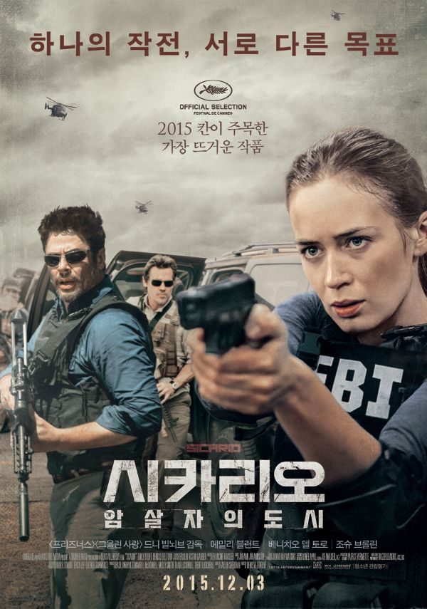
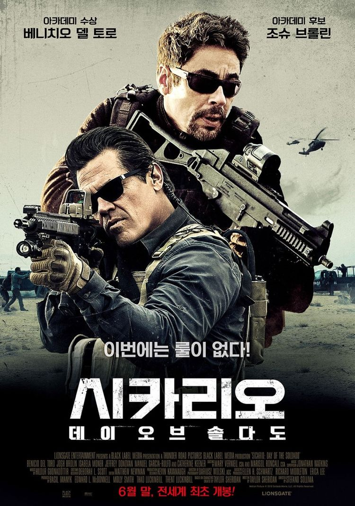

 하나의 작전, 서로 다른 목표 당신이 믿었던 정의가 파괴된다 사상 최악의 마약 조직을 소탕하기 위해 미국 국경 무법지대에 모인 FBI요원 케이트(에밀리 블런트)와 CIA 소속의 작전 총 책임자 맷(조슈 브롤린), 그리고 작전의 컨설턴트로 투입된 정체불명의 남자 알레한드로(베니치오 델 토로). 누구도 믿을 수 없는 극한 상황 속, 세 명의 요원들은 서로 다른 목표를 향해 움직인다. 숨쉬는 모든 순간이 위험한 이곳에서 이들의 작전은 성공할 수 있을까!  목표를 위해서 모든 것을 버린 작.전.개.시 마약 카르텔이 테러리스트들을 국경으로 수송하고 있다는 정보를 입수한 CIA 작전 총 책임자 맷(조슈 브롤린). 그는 가족이 카르텔에 의해 살해당한 의문의 남자 알레한드로(베니치오 델 토로)에게 도움을 요청한다. 그리고 이들은 정의 뿐 아니라 그들의 룰도 버린 비밀 작전을 감행하게 되는데···